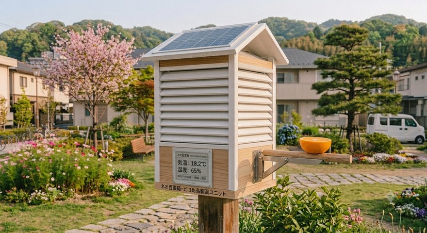

ピコぬ市では、気候変化や自然環境の変化を長期的に記録するため、市内各所に 「ネオ百葉箱」を設置しています。従来の百葉箱が持つ通風・遮光の考え方を継承 しながら、小型センサーや通信技術を組み合わせた次世代型環境観測装置です。
ネオ百葉箱の特徴
🌡️ 気象データの記録
- 気温
- 湿度
- 降水量
- 周辺環境データ
☀️ 省電力運用
- 小型ソーラーパネルによる電力供給
- 長期間の自動観測
🐦 ピコぬ鳥の生態観測
- 飛来状況の記録
- 季節による行動変化の調査
- 市内緑地環境の確認
ピコぬ鳥観測モデルについて
一部のネオ百葉箱には、ピコぬ鳥観測用の止まり木を備えたモデルがあります。 観測補助として果実を設置する場合がありますが、これは故障ではありません (※市民から多く寄せられるお問い合わせです)。
開発について
ネオ百葉箱は、環境課と市シルバーセンター技術班の協力により改良が続けられて います。旧来の道具を大切にしながら、現在の技術を取り入れることで、長く使える 環境観測設備を目指しています。
よくあるご質問
Q. これは鳥の巣箱ですか?
A. いいえ。環境観測装置です。ただし、ピコぬ鳥が止まり木として利用する場合があります。
Q. 横についている木の棒は何ですか?
A. ピコぬ鳥の観測用止まり木です。生態観測のため、観測設備の一部として設置されています。
Q. オレンジが設置されていることがあります。
A. 観測補助用の設備です。故障や忘れ物ではありません。
Q. なぜ少し手作り感があるのですか?
A. シルバーセンター技術班による改良を重ねながら、長く使用できる設備として維持されています。